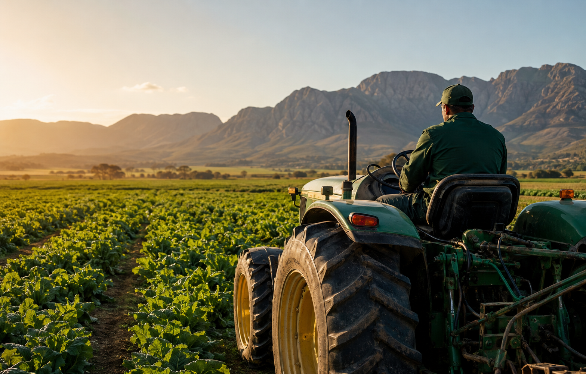
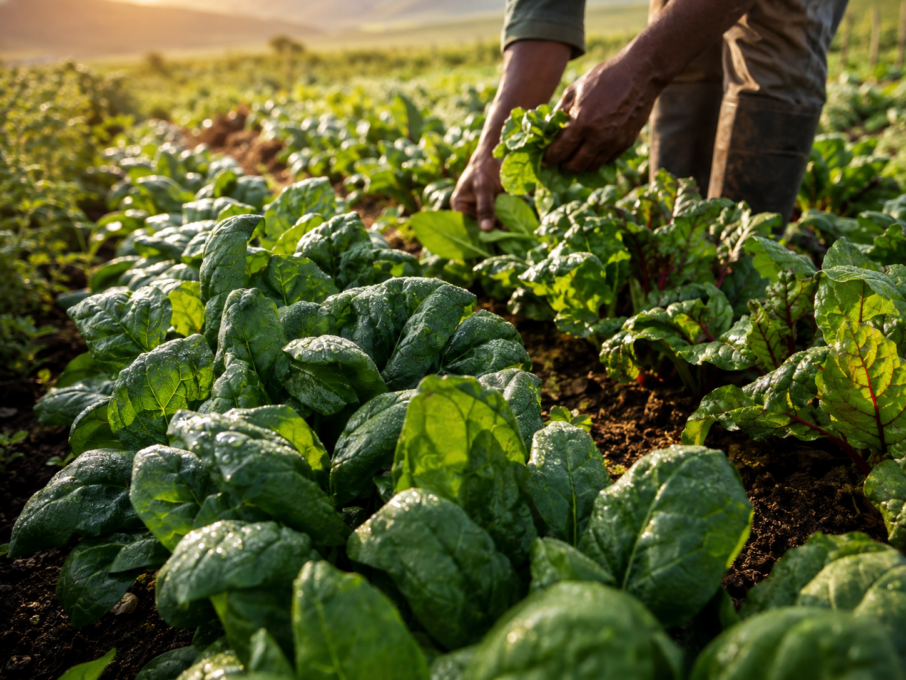
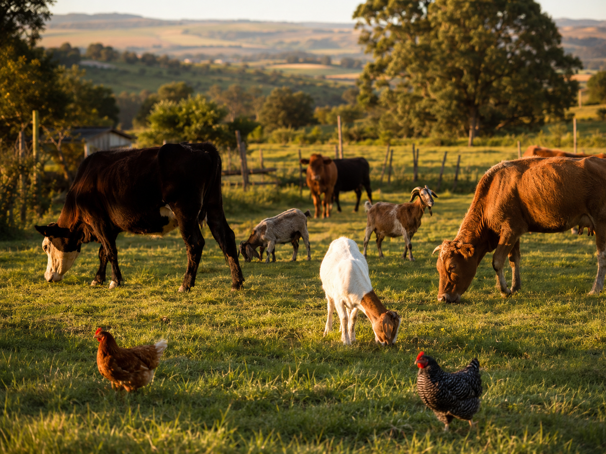
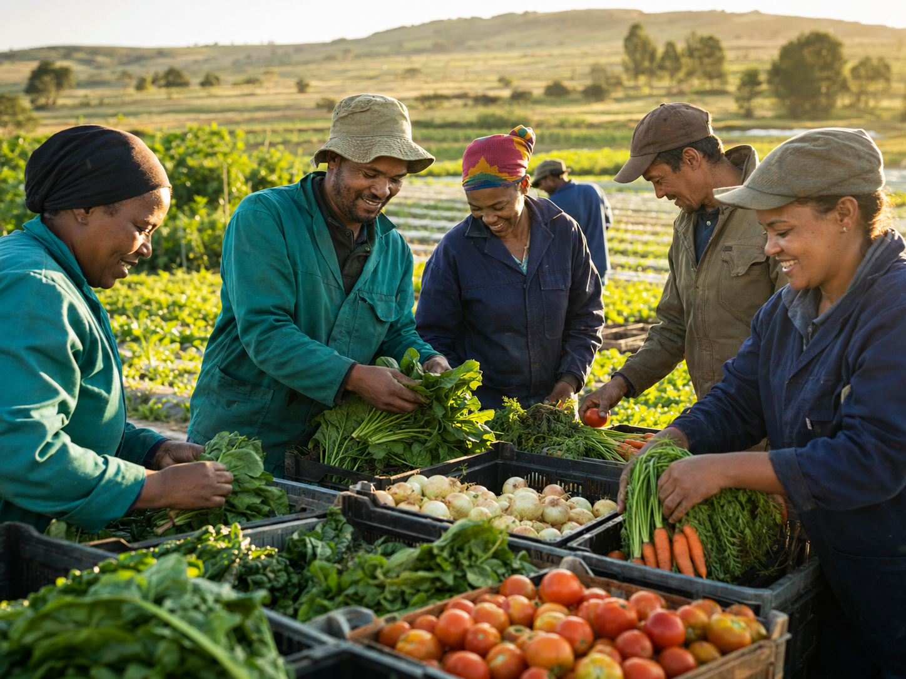

Mixed FarmingCrops & livestock
Agriculture with purpose
Cultivating Growth.
Feeding Futures.
We grow nourishing food, raise livestock and care for the land while creating sustainable livelihoods and strengthening local food security.
Mixedfarming
Land-firstpractices
Communityimpact

Growing since 2025Sustainable PracticesSoil & water care
Community FirstFood with purpose
Rooted in hope
Practical farming.
Lasting impact.
Mount of Hope Agricultural Holding PTY (LTD) is a diversified agricultural enterprise engaged in practical, land-based activities that sustain households and generate income.
From field crops and vegetables to livestock, agroforestry and food processing, our work connects responsible production with meaningful community support.
Director
Sannah Mokoena
What we do
From seed to shared value.
Our diversified farming model supports food production, income generation and responsible land stewardship.
01
Production
Crop Production
Growing staple crops, fresh vegetables and seasonal fruit for household use and local markets.
- Maize and beans
- Spinach, tomatoes, onions and carrots
- Citrus and seasonal fruit
02
Livestock
Livestock Rearing
Responsible poultry, small-stock, cattle and pig farming for eggs, milk, meat and local sales.
03
Diversification
Agroforestry
Planting trees alongside crops to provide shade, fuelwood and long-term soil conservation.
04
Value addition
Processing
Drying vegetables and milling feed for cattle, sheep and goats to reduce waste and add value.
05
Stewardship
Land & Water Care
Composting, crop rotation, manure application, irrigation, rainwater harvesting and borehole use.
Life on the farm.
Rooted in the land.
Growing every day
A closer look at the crops, livestock, people and daily work behind Mount of Hope Agriculture Holdings.




Land that gives
for generations
Responsible growth
Farming with the future in mind.
Healthy farms begin with healthy natural resources. Our supporting activities improve productivity while protecting the land.
01Soil managementComposting, rotation and natural manure application.
02Water managementEfficient irrigation and rainwater harvesting.
03Farmer developmentTraining, workshops and government programmes.
04Market accessLocal markets, cooperatives and surplus sales.
Community first
Growing more than food.
Growing hope.
We share produce with neighbours, children’s homes and people in need, participate in farmer groups and contribute to local food security and rural development.
Partner With Us ↗ Let’s grow together
Start a conversation.
Interested in our produce, farming activities, partnerships or community work? Send us a message.
Mount of Hope Agricultural Holding PTY (LTD)
Director: Sannah Mokoena
Director: Sannah Mokoena